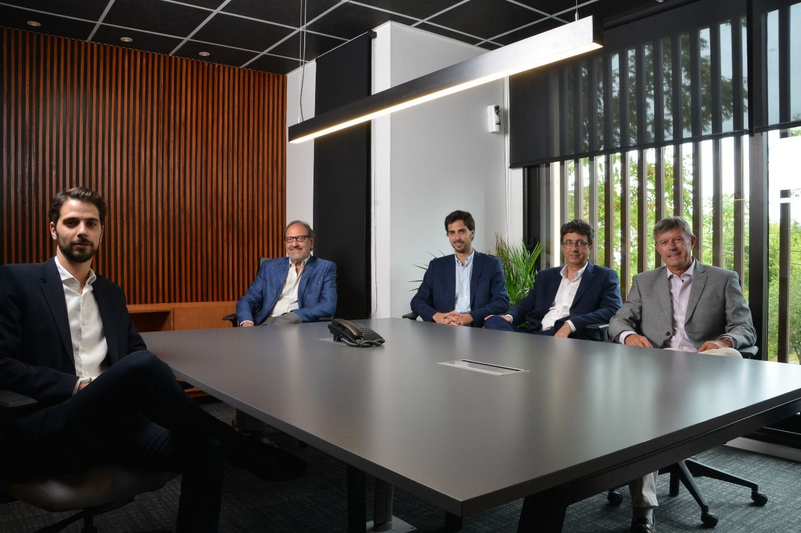

Ben Wallace, fue quien creo BlackRoses desde los cimientos y escalo peldaño tras peldaño para trasformarce en uno de los mejores subastadores, obtener un solido renombre y posteriormente crear la mejor firma de subastas a nivel mundial, donde personas, coleccionistas y aficionados de todo el globo asisten a subastar y comprar diferentes coleccionables.

El equipo de Ben Wallace es tan solido y leal como una roca. Con gran trayectoria en el mercado y seleccionados por su lealtad a Wallace, Rick Walker, Sergio Casas, Henry Spielberg, Luis Litt y Jhon Miller tienen un asiento en la mesa de reuniones cada semana junto al jefe.